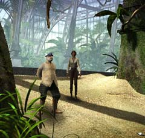
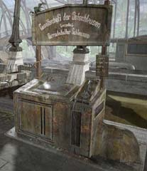

| 概要 | 地図 | |
| 淡いヒント集 | ヒント集 | 的確なヒント集 |
| 攻略最短ルート | Syberia 攻略へ |
| 地域選択へ | 次の段階へ >> |
バロクシュタット
|
駅にて(序盤)
駅に着くと、早速あなたはオスカーから機関車のゼンマイを巻くように言われるだろう。二人で出分けして探すように促すが、彼は駅内部の機構は精密カラクリ人形にとっては非常にやっかいなものであると主張し、機関車から出ようとしない。こんな状況の中で、あなたがしなくてはならないこととは、 ・ゼンマイを巻く装置の発見 ・駅の駅長との接触 ・機関車を移動させる手段の確保 ・機関車を移動させるための交渉(上と同じか?) ・フックの入手 である。駅は以外と広く、様々なものが見えるだろう。
ゼンマイを巻く装置

・はたしてここはどこだろうか? 見たところ、駅の外である。 ・ゼンマイゆるみ動けない機関車をどのように運べばいいだろうか?
駅長
 ・彼はどのようなことを知っているだろうか? ・彼からは、今のところあまり重要なことは聞き出せないはずだ。
船

・船を使って、機関車を動かせるかもしれない。とにかく聞いてみることが先決だろう。 ・船員達は、何を要求してきただろうか? ・その要求に答えるにはどうしたらいいだろうか。誰か他の人物を当たるしかない。   ・ハシゴの上にもきっと何かあるだろう。しかし、今は行くことができない。 ・この装置も何か意味があるだろう。電話をしてみれば、少しは手がかりがつかめるかもしれない。 ・しかし、今はこれらは関係がない。もっと重要なことがあるはずだ。 ・フックはどこにあるだろうか? 探して欲しい。今の状況で確実にてにはいる位置にある。 |
| 地域選択へ | 次の段階へ >> |
| 概要 | 地図 | |
| 淡いヒント集 | ヒント集 | 的確なヒント集 |
| 攻略最短ルート | Syberia 攻略へ |
Syberia
| 目次へ戻る | ページの上部へ |